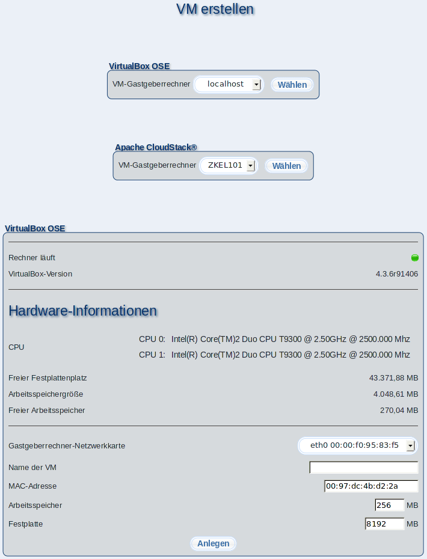

Auf dieser Seite können Sie virtuelle m23-Clients (VMs) erstellen. VMs teilen sich die Ressourcen des Gastgeberrechners und verhalten sich im Netzwerk wie ''normale'' m23-Clients. Zum Anlegen einer virtuellen Maschine muß der VM-Gastgeberrechner angeschaltet und auf diesem das m23-Virtualisierungspaket (bei Nutzung der integrierten VirtualBox-Virtualisierung) installiert sein (Weiteres s.u.).

Unterabschnitte
root
2017-01-05